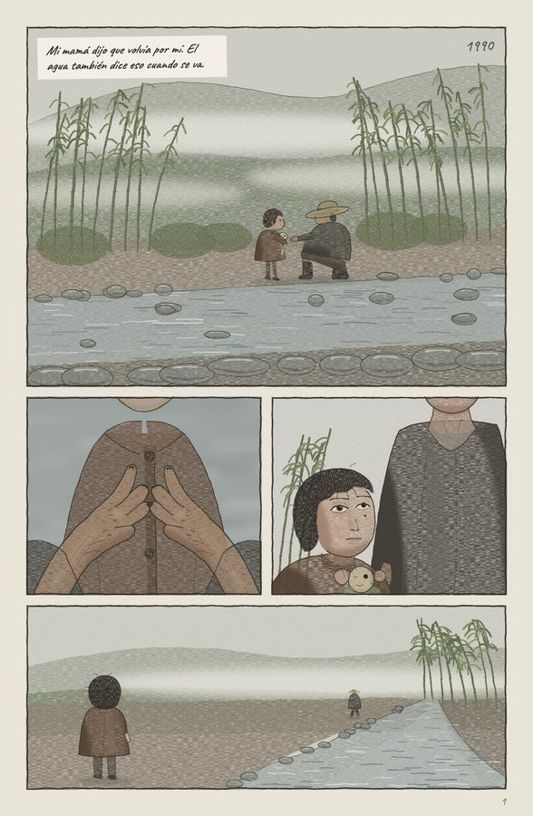
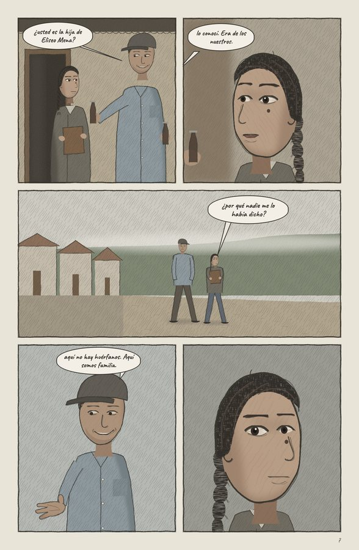
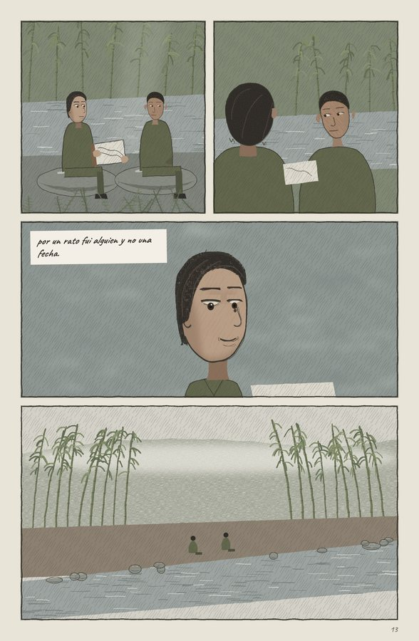

Cómic
Cosas que sé de mí
En Caldono, un municipio de Cauca vive Rosario, es una niña que a temprana edad fue dejada por su mamá, Amparo, en una guardería comunitaria cuando la guerrillera debe volver a las filas de las FARC tras el asesinato de su esposo a manos del Ejército. Rosario crece en un hogar del Bienestar Familiar, donde la estigmatizan y la tratan como la hija de la guerrillera, y su única aliada es su profesora, Elvira. En un pueblo donde el Ejército y los paramilitares abusan de las mujeres creyéndolas colaboradoras de la guerrilla, Rosario entra a las FARC-EP a los 14 años. Allí descubre que su cuerpo tampoco le pertenece: planificación obligatoria, vigilancia de su ciclo y ninguna decisión propia. Mantiene contacto por cartas con su profesora y, al cumplir la mayoría de edad, decide no seguir en la guerrilla. Se desmoviliza y Elvira la ayuda a estudiar y a construir una vida.


